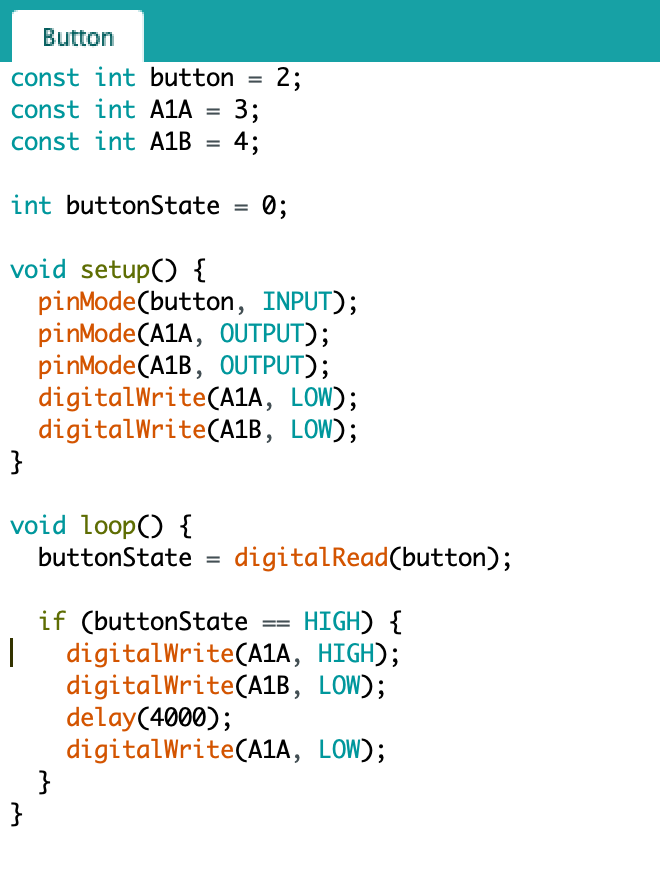
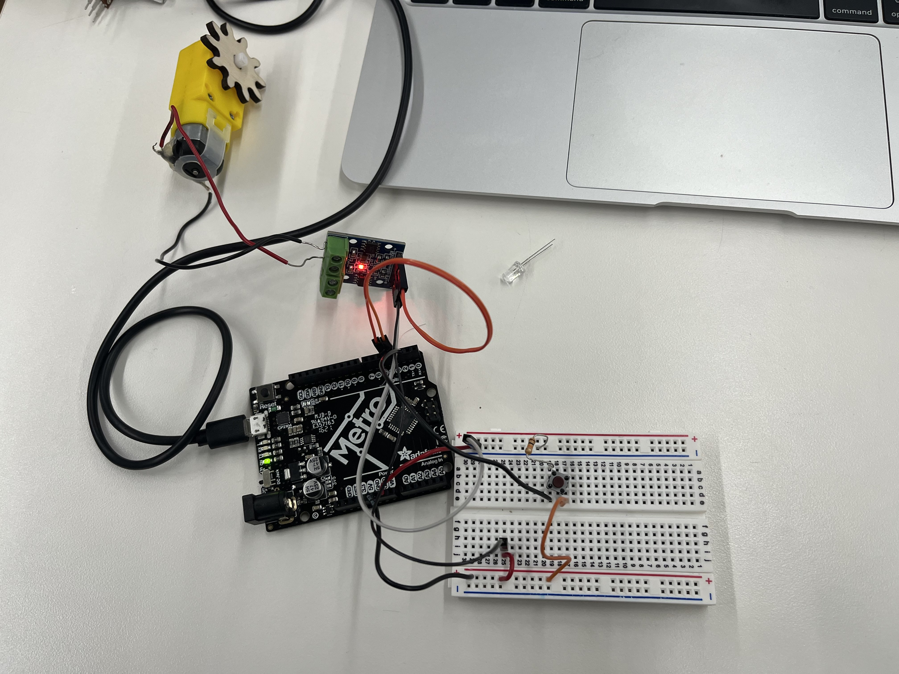
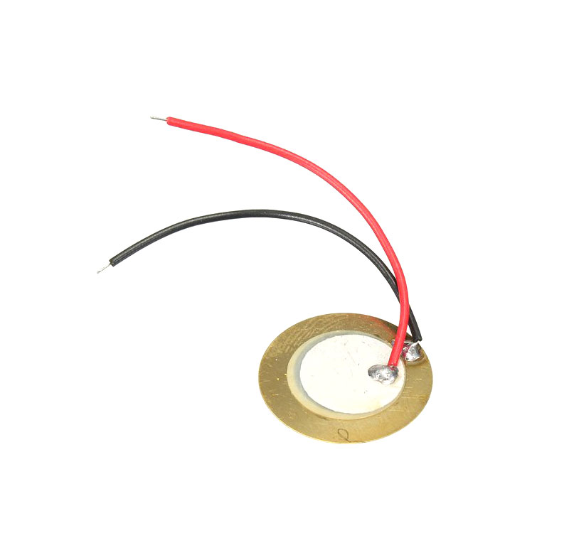
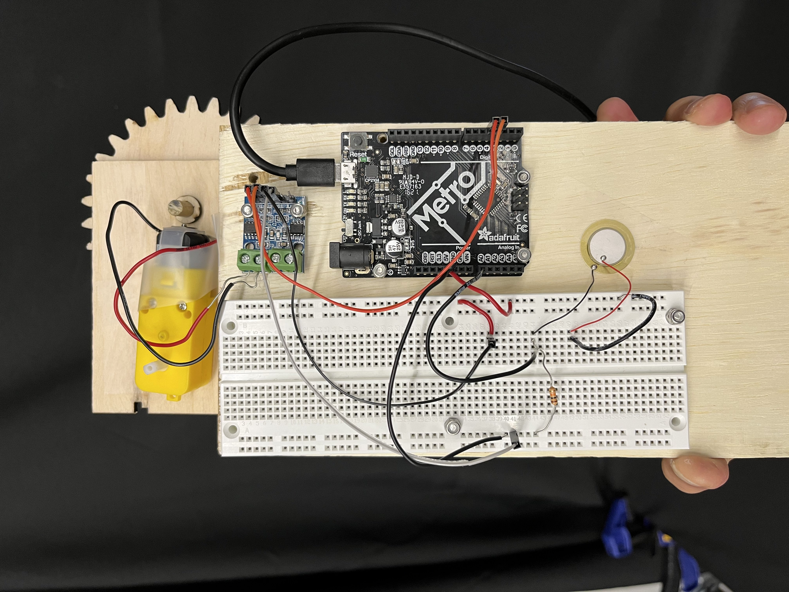
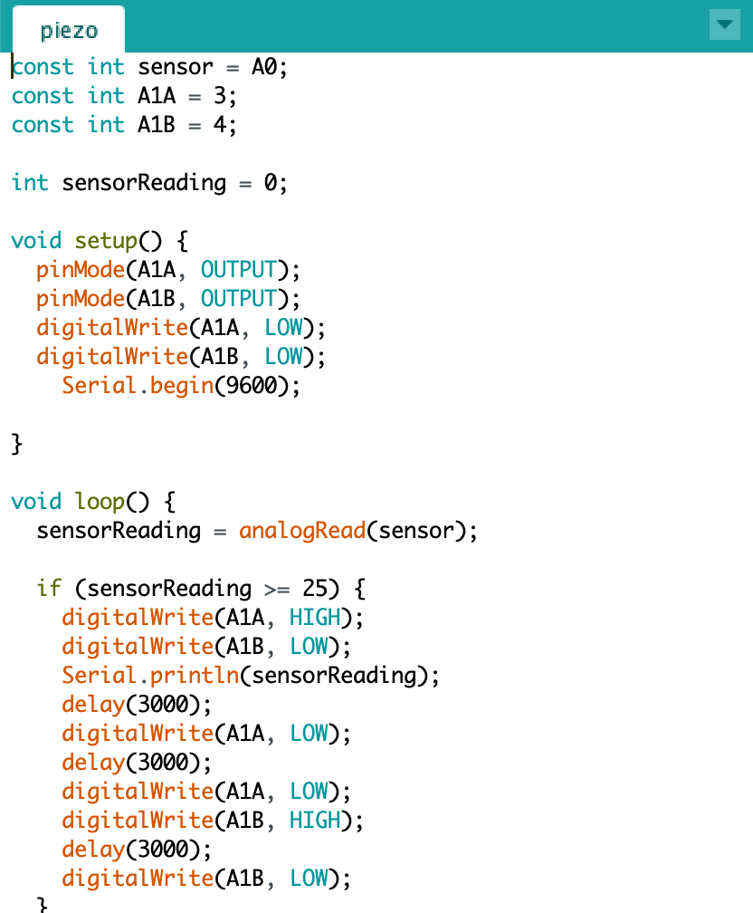

# preface
# ---------------------------------
last week, i created a mechanism that uses gears/motor to wind a string and raise a weight — a proxy for my final assignment: a knock-activated door opener.

this mechanism was controlled by a potentiometer (which, given the low
voltage, essentially acted as an on/off switch). for this week's assignment,
i decided to implement a mechanism that would allow for the motor to raise
and lower the weight after a knock.
# creating the circuit
# ---------------------------------
before incorporating the vibration sensor in any way, i decided first to make sure i could
create the circuit using the button as a trigger.
i essentially combined the arduino programs from the microcontroller workshop and motor driver workshops
to create a circuit that, when the button was pressed, would make the motor spin for four seconds and then stop:

the circuit, too, was essentially a combined version of the previous two workshops:

# incorporating the piezo
# ---------------------------------
a piezo sensor, as i learned from the arduino handbook, is a device that detects vibrations and produces a small charge based
on the strength of the vibration:

to incorporate this into the circuit, i removed the button and replaced it with the piezo sensor. the only additional change
i had to make to the circuit was to switch the input from digital pin 1 to analog pin 0.
additionally, i secured each of the components onto a wood block using m3 screws and nuts:

for the program, then, i had to make some small adjustments:
- i updated the sensor input pin from 2 to A0
- i changed the sensor reading from digitalRead to analogRead
- i changed the conditional statement from buttonState == HIGH to an sensorReading >= 25
to account for the fact that the output is a numerical value.
- i complicated the command, by making the motor turn in one direction for three seconds, pause for three seconds, and turn in the other
direction for three seconds before stopping.
- i included a print statement to display the value of the sensor when it is activated.

and here is the final product — me knocking on the wood with a screwdriver: